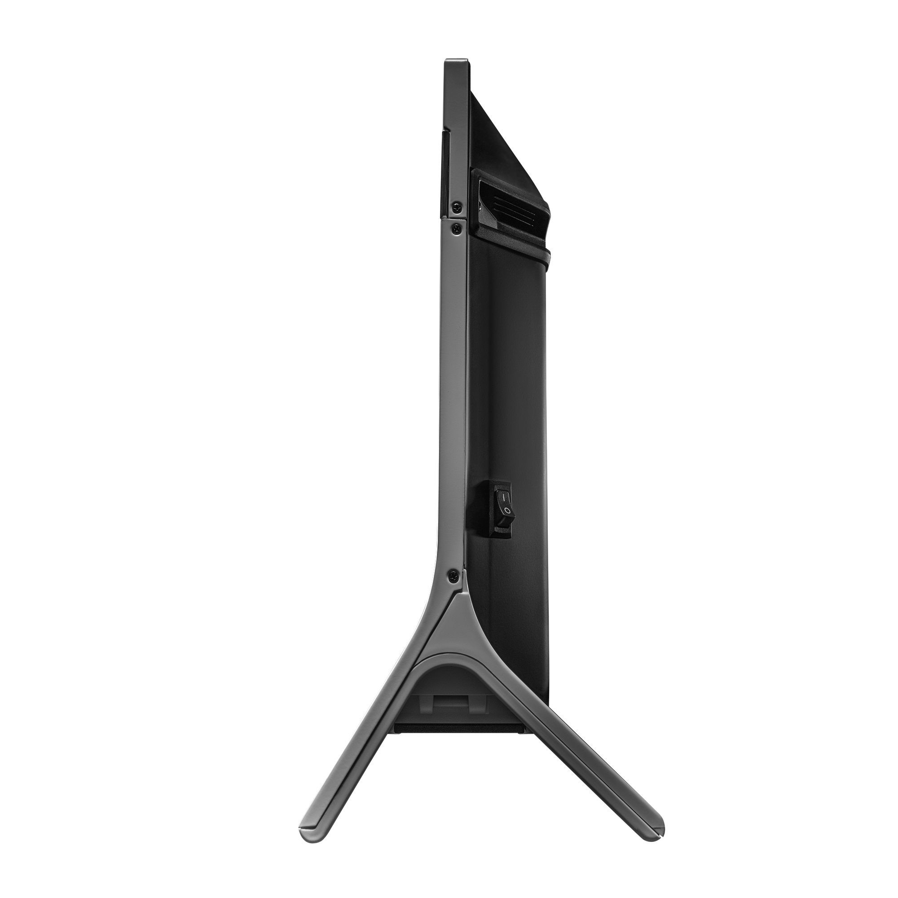
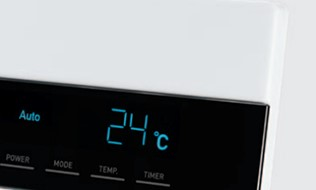
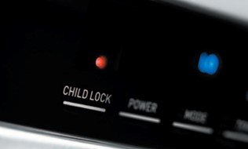
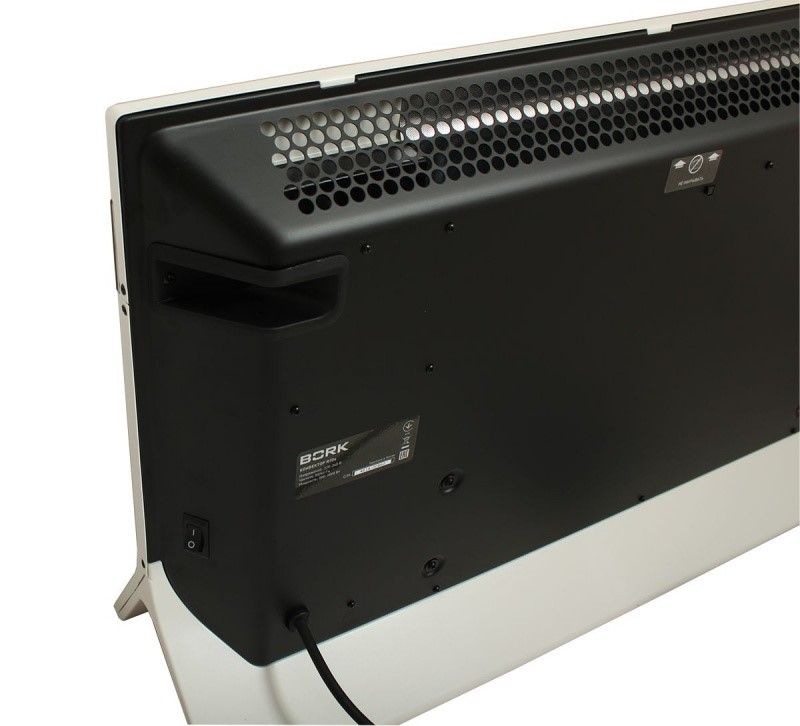
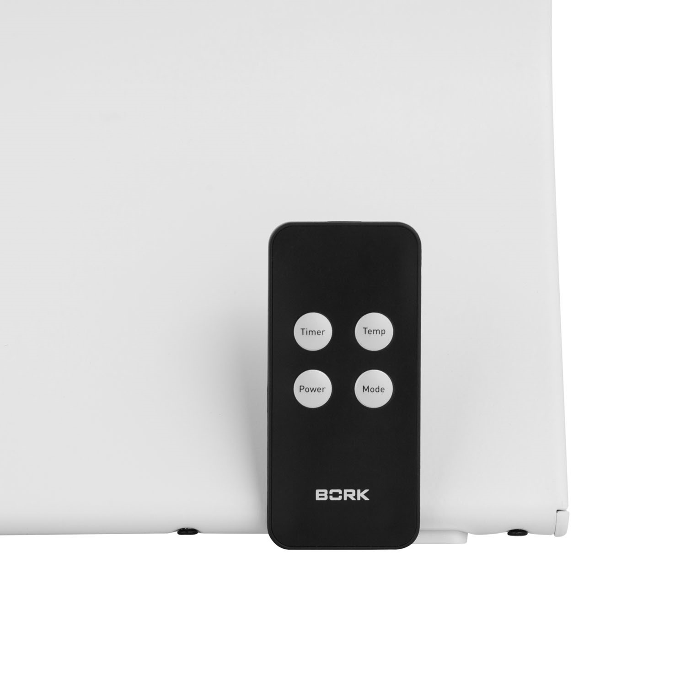
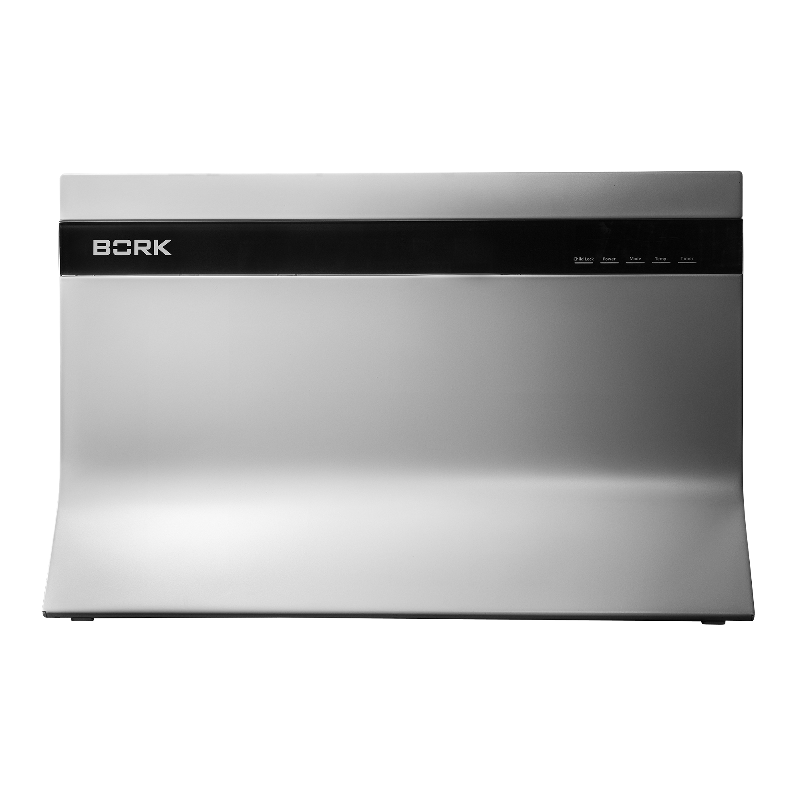

Конвектор BORK R704
Уникальный дизайн
Конвектор выполнен в традиционном для BORK сдержанном стиле по эксклюзивной разработке японских дизайнеров: строгая геометрия линий и элегантный белый цвет превращают бытовой прибор в изящное дополнение самых изысканных интерьеров.
Естественная конвекция
Работает практически бесшумно и распределяет тепло по принципу естественной циркуляции нагретого и холодного воздуха в диапазоне от +18˚С до +30˚С.
Три режима работы
- LO – низкая мощность работы
- HI – высокая мощность работы
- Auto – автоматический режим
Данный режим позволяет контролировать температуру в помещении. Если температура в помещении выше 30°С, то конвектор автоматически переключается на 18°С
Безопасность
Конвектор оснащен несколькими защитными функциями, позволяющими безопасно использовать его в детских комнатах. Устройство автоматически отключается при случайном опрокидывании, через 12 часов в состоянии покоя и при перепадах напряжения.
 Удобство использования
Конвектор R704 отличается высокой энергоэффективностью, возможностью дистанционного управления и отсутствием шума при работе, что обеспечивает максимальный комфорт при его использовании.
Характеристики

Мощность: 500-1000 Вт
Обогреваемая площадь: 15-20 кв.м
Число режимов: 3
Диапазон температур: +18˚C...+30˚C
Вес: 6,8 кг
Срок гарантии: 1 год
Тип управления: Сенсорный
Степень защиты: IP24
Таймер: 1-4 ч
Пульт управления: Есть
Отключение при перегреве: Есть
Тип размещения: Напольное
Материал корпуса: Металл
Цвет: Белый
Страна производства: Китай